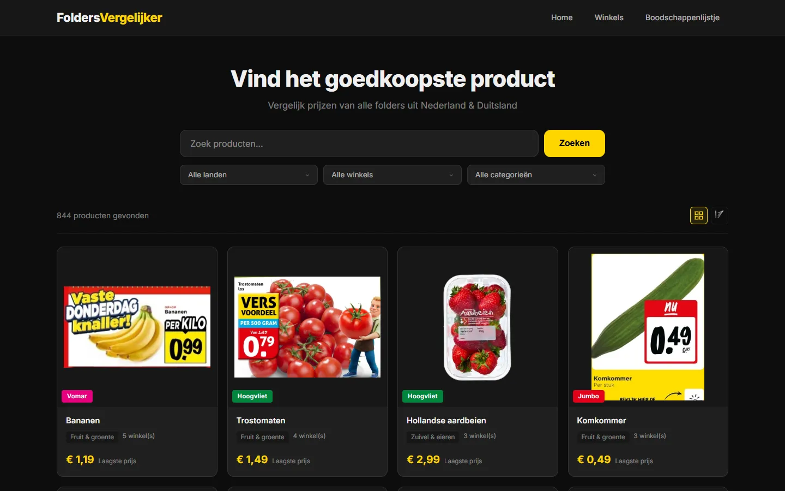

Featured project
FoldersVergelijker - prijsvergelijkingsplatform voor NL/DE supermarkten

FoldersVergelijker
5.219 producten uit 22 supermarkten, automatisch gescraped via kaufDA.de brochure API en AlleFolders. Prijs per eenheid, shopping list met PDF-export.
Technische details
Hoe FoldersVergelijker in elkaar steekt
Scrapers
Node.js (puppeteer-extra + stealth) voor 9 winkels. PHP cURL voor kaufDA.de (__NEXT_DATA__) en AlleFolders GraphQL API.
Database
MariaDB 10.4.32 met tabellen voor producten, prijzen, winkels en categorieën. Upsert-logica per dag.
Frontend
PHP public page met search, filters, sort, grid/list view. Shopping list met autocomplete en PDF via FPDF.
Notificaties
Gmail SMTP via PHPMailer. PDF-billage met FPDF v1.86, cp1252 encoding via iconv.
Over mij
Developer met focus op data-gedreven applicaties
Ik ontwikkel webapplicaties van concept tot productie. Mijn focus ligt op data-gedreven applicaties, webscraping en het bouwen van functionele interfaces. Ik werk met PHP, Node.js, MySQL en moderne frontend-technieken.